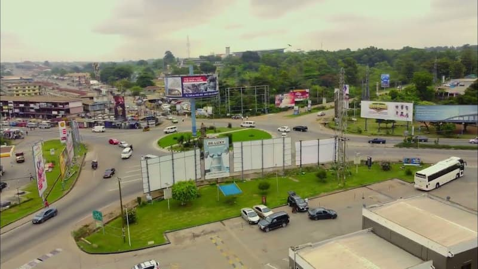

My favorite city is called Konongo, located in Ashanti Akyim Central.
Konongo has gained popularity since Black Sherif won the VGMA Artise of the year and he mentioned Konongo as where he comes from.
Konongo connects the highway of Kumasi to Accra and vice versa, this has also caused the population of the city because many people have been the highway often.
Konongo is my favorite city because of the hostility of the people in the city and also their love for arts and creativity.
There are also good schools in Konongo that enables the people of Konongo have access to quality education.
Below is a photo of my favorite city:
